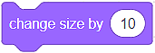

Pamje¶
Në Scratch, sprites kanë një ose më shumë kostume. Mundësia për të ndryshuar kostumet na jep mundësinë për të krijuar programe interesante dhe animacione. Për këtë qëllim, ne përdorim blloqet nga kategoria Looks.
Të menduarit, të folurit, ndryshimi i madhësive, ndryshimi i kostumeve ————————————————– ———
Ne do të krijojmë një program të quajtur Farm, i cili ka dy sprites - një vajzë Avery dhe një Zog. Ne do t’i vendosim ato në mjedisin e një ferme (Farm backdrop). Do ta vendosim qiqra në dorën e vajzës. Vajza do të “ushqejë” zogun dhe do ta shikojë të rritet.

Do të fillojmë me skenarin e vajzës. Për vajzën, ne duam:
Madhësia e saj të jetë 50% më e madhe se madhësia origjinale (150%);
Ajo të mendojë “Sa bukur …”
Ajo të thotë: “Shko, shko!”
Ne do ta vendosim zogun në dorën e saj. Për pulën, duam:
Madhësia e saj të jetë 50% më e vogël se madhësia origjinale (50%);
Ajo për të simuluar një lëvizje pecking;
Madhësia e saj të rritet gjatë ekzekutimit të programit.

Shikoni procesin e krijimit të programit, i cili lejon që sprites të mendojnë, të flasin dhe të ndryshojnë madhësinë dhe kostumet e tyre:
Siç mund ta shihni, ne kemi përdorur disa blloqe nga kategoria Looks për të krijuar programin tonë Farm:
Ne rregulluam madhësinë e sprites duke përdorur bllok
 ;
;Ne ndryshuam madhësinë e sprites duke përdorur bllok ;
Ne shfaqëm mendimet e sprite duke përdorur bllokun ;
Ne shfaqëm mendimet e sprite duke përdorur bllokun
 ;
;Ne ndryshuam kostumet e sprite duke përdorur bllokun

Përveç gjithçkaje të përmendur më lart, blloku  ishte vendimtare për funksionimin e duhur të programit tonë. Përsëritja është një koncept i fuqishëm sepse e bën kodin më të shkurtër, më të qartë dhe më të lehtë për të debuguar. Duke përdorur përsëritjen, ne lejuam që pulë të “lëvizë”, d.m.th. kemi siguruar përsëritjen e komandës që ndryshon kostumin. Blloqet e përsëritjes janë të vendosura në kategorinë Control. Kjo kategori përmban blloqe të rëndësishme të përdorura për kontrollin e rrjedhës së programit.
ishte vendimtare për funksionimin e duhur të programit tonë. Përsëritja është një koncept i fuqishëm sepse e bën kodin më të shkurtër, më të qartë dhe më të lehtë për të debuguar. Duke përdorur përsëritjen, ne lejuam që pulë të “lëvizë”, d.m.th. kemi siguruar përsëritjen e komandës që ndryshon kostumin. Blloqet e përsëritjes janë të vendosura në kategorinë Control. Kjo kategori përmban blloqe të rëndësishme të përdorura për kontrollin e rrjedhës së programit.
 Krijoni një program, i cili do të simulojë funksionimin e një semafori. Ndihmë e vogël: Dritat në një semafor nuk ndryshojnë me të njëjtën shpejtësi. Dritat e kuqe dhe jeshile qëndrojnë më gjatë se e verdha.
Krijoni një program, i cili do të simulojë funksionimin e një semafori. Ndihmë e vogël: Dritat në një semafor nuk ndryshojnë me të njëjtën shpejtësi. Dritat e kuqe dhe jeshile qëndrojnë më gjatë se e verdha.
Watch the process of creating the program, which allows you to simulate the functioning of a traffic light:
- Siguron që mendimet e sprite të mbeten në skenë.
- Ju keni absolutisht të drejtë!
- Siguron që mendimet e sprite të ndryshojnë vazhdimisht
- Për të bërë të mundur që mendimet të ndryshojnë vazhdimisht, duhet të përdorni bllokun e duhur për të përsëritur komandën për shfaqjen e mendimeve të sprite.
Ne tërheqim vëmendjen tuaj për ekzistencën e blloqeve që ekzekutojnë komanda të ngjashme me ato që kemi paraqitur në këtë mësim. Për shembull, blloku  siguron që fjalimi i sprite nuk zhduket nga skena. Supozojmë se mund të konkludoni se cili është qëllimi i bllokut
siguron që fjalimi i sprite nuk zhduket nga skena. Supozojmë se mund të konkludoni se cili është qëllimi i bllokut 
Përveç se më sipër, kategoria Show përmban disa blloqe të tjera.
Në të njëjtën mënyrë ne mund të zgjedhim kostumet e sprite, gjithashtu mund të zgjedhim sfondin e skenës duke përdorur bllokun 
Blloqet që na lejojnë të tregojmë  ose fsheh një sprite janë gjithashtu shumë të dobishme. Ne do t’i përdorim këto blloqe në mësimet e mëposhtme.
ose fsheh një sprite janë gjithashtu shumë të dobishme. Ne do t’i përdorim këto blloqe në mësimet e mëposhtme.
Ne do t’ju lejojmë të zbuloni vetë se si mund të luani me ngjyrën dhe pamjen e spritës tuaj duke përdorur blloqe për ndryshimin e ngjyrës ose efektit (change … *), duke vendosur ngjyrën ose efektin (*set … *) , si dhe për fshirjen e të gjitha efekteve grafike (*clear graphic effects):